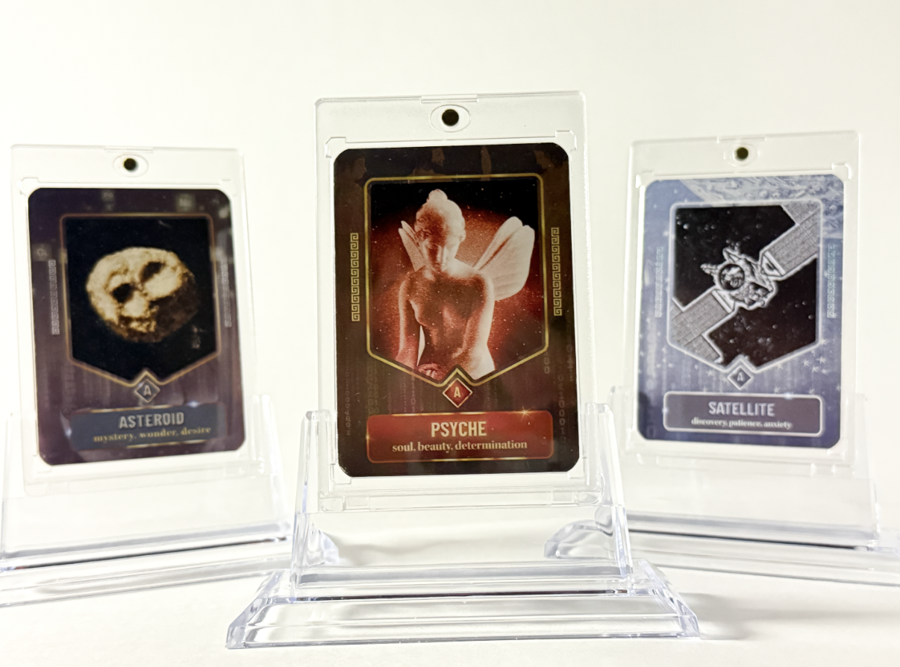
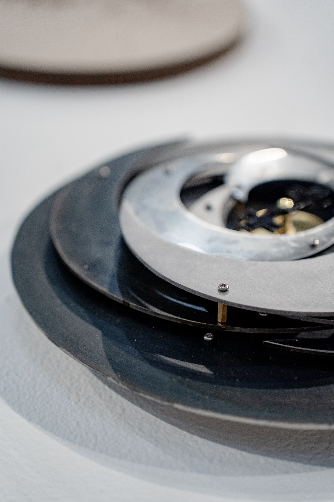
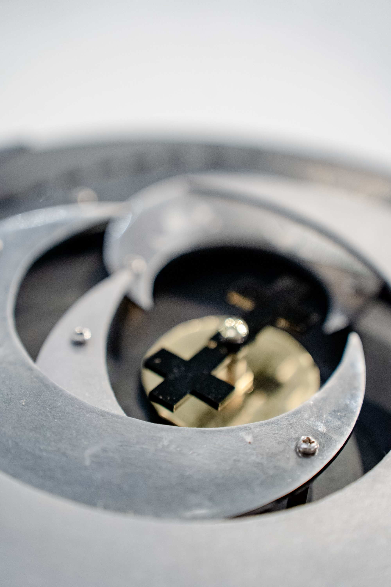

Psyche Campaign
For my senior thesis in Visual Communications at Arizona State University, I collaborated with the Psyche mission to design a trading card game that engages the public with the ongoing mission. The game explores the mythology, technology, and mineralogy of asteroid Psyche, as well as the emotions, scientific achievements, and discoveries evoked in the scientists who are part of the mission throughout its duration.


Accretion
As part of this project, I also designed a sculptural clock representing the formation of 16 Psyche, which is now on display in the mission team's office space at ASU.

